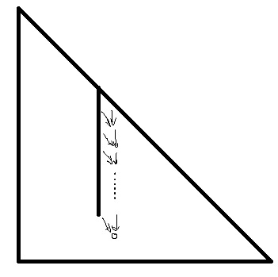

Petrozavodsk Winter 2022 Day 5 赛后小结
比赛链接：https://qoj.ac/contest/823
开局我把 B 秒了，但是唐氏操作一直到半小时后才 AC ，期间队友先把 C 秒了，期间队友非常厉害的把 K 秒了。
我把 G 秒了，但是这个时候队长说你怎么老是按删除键，于是把删除键给我抠了，然后我龟速打字，最终一个小时过了 G 。
但是我确实太经常的按删除键，这个确实要改。
队长构造出了 E ，上去写过了，此时一个半小时。
我看了下 I ，感觉好像不难，上去写了个线段树过了。
接下来进入很长的挂机时间。Imakf 搞 J ，我搞 H ，队长搞 D ，在两个多小时的时候，我放弃了 H ，和 Imakf 讨论 J ，然后 Imakf 甩给我一个很怪的式子，但是后面讨论着讨论着 Imakf 发现自己列错式子了，这道题目和 Gem Island 很像，其中一个性质一模一样，Imakf 非常幽默的把这个性质搞错了，然后 Imakf 上去写，我去想 H，后面在 2:40 的时候，Imakf WA 了第一发。
后面 Imakf WA了好几发，但计数题是这样子的，一遍写对就还好，否则就折磨了，不知道式子哪里错了。
期间和他讨论了好几次，式子改了好几遍，代码也改了好几次，最后终于在四个小时的时候过了此题，计数题是这样子的。
期间，我在 Imakf 写 J 的时候，H 搞了好久，最终发现是数学系老师上课讲了无数遍的性质，但是我们队有唐氏儿与此题大战一个小时都没注意到，甚至注意到后还不会做，总算在半个小时后注意到自己的铸币操作，在四个小时的时候过了 H 。
然后队长上 D ，我和 Imakf 讨论 A ，但最后得出 A 不会做或者写不了的结论，队长也没有冲出 D ，最后遗憾离场。
部分题解：
B
注意到前缀和在模 $3$ 的剩余系下只有三种取值，不妨设 $0,1,2$ 的个数分别为 $a,b,c$ ，其中 $0$ 不算最开头，所以 $a+b+c=n$ 。
那么个数就为：$\binom{a+1}{2}+\binom{b}{2}+\binom{c}{2}$ 。
在知道 $a,b,c$ 后，显然最优答案的前缀和数组就是：$a$ 个 $0$ ，$b$ 个 $1$ ，$c$ 个 $2$ 排列。
所以枚举一下 $a$ ，然后 $b,c$ 用二次方程解一下就行了。
但是期间式子列错了，而且 $\Delta$ 和 $\sqrt{\Delta}$ 用混了，WA 了两发，唐完了。
与题解一致。
G
注意到对于某个特定的 $k$ 可以容斥解决，那么要一次性算出所有的 $k$ 就直接 NTT 就行了。
具体来说：高位前缀和+容斥+NTT 即可，时间复杂度：$O(2^n*n)$
与题解一致。
I
注意到不妨设 $x$ 的限制是 $\ge y$ ，那么就给 $cnt[y]+1$ ，那么答案合法当且仅当 $\forall j,\sum\limits_{i=1}^{j}cnt[i]\ge j$ 。
首先先把所有数字的最大限制和次大限制找到，然后遍历所有限制，把这个限制拿掉，然后把以这个限制为最大限制的数字改成次大限制，看是否合法，显然总复杂度是 ：$O(n\log{n}+m)$ 的，当然，求最大限制的部分用了 set 来求，所以总时间复杂度是：$O(n\log{n}+(n+m)\log{m})$
与题解一致。
J
有一个性质和 Gem Island 的一个性质一样。
不妨考虑第 $i$ 个细菌增殖了 $a_{i}$ 次，共增殖了 $r$ 次的概率：
即只要知道了每个细菌增殖的次数，则概率是固定的。
在知道这个性质后，注意到最大的段只有一个，不妨考虑枚举最大段。
式子为：
其中要算类似这种东西：
对应于杨辉三角形上的一列，这一列的系数要么全是 $1$ 要么是等差数列。

全 $1$ 是一个经典问题，直接杨辉三角形上合一合就行了。
问题是等差数列，注意到等差数列可以看成是同一条竖线上长度逐渐递增的线，所以跑到下一列的时候恰好是系数全为 $1$ 的问题，所以直接跳到下两列就行了。
同样的方式可以用来处理系数是 $k$ 阶等差数列的问题，当然，这个问题用不到。
当然也能代数推导，Imakf 给了种代数推导的方式：$\sum\limits_{i=j}^{k}(i+1)\binom{i}{j}=\frac{1}{j+1}\sum\limits_{i=j}^k\binom{i+1}{j+1}$
当然，其实本质是一样的，但是从两个角度看也可以收获不同的东西。
剩下部分计数一下就行了。
与题解一致。
H
非常乐的一道题目。
首先一个性质，我们可以证明所有贡献和其实等于 $\sum\prod\limits_{i=1}^{q}a_{i}$ 。
原因是，设 $S_{i}$ 为固定 $1\le b_{1}<b_{2}<…<b_{i}\le q$ ，$S_{i}=\sum\prod\limits_{j=1}^{i}a_{b_{j}}$ ，显然 $S_{i}$ 的值不会根据 $b$ 的选取而改变，原因是一个幸运票 shuffle 一下还是幸运票。
然后贡献和等于：$\sum\limits_{i=0}^{n}S_i * T_{n-i}+(2^{q}-1)S_{i}$ ，其中 $T_{i}$ 表示 $\prod\limits_{i=1}^{q}(x+i)$ 中 $x^{i}$ 的系数。
这非常有意思啊，因为可以证明 $q$ 是素数的时候，$\prod\limits_{i=1}^{q}(x+i)=x^{q}-x$ ，而这个的证明就是初等数论课上讲了一万遍的东西。
显然 ${q-1}$ 次多项式的根至多 $q-1$ 个，所以指定过 $q$ 个点的首一多项式只有一个，就是 $x^{q}-x$ 。
那么整理一下式子就可以得到：$\sum\prod\limits_{i=1}^{q}a_{i}$ 。
好了，知道这个结论问题就简单了。
现在任意给你个方案，设相同的数字出现次数分别为 ：$c_{1},c_{2},…,c_{t},\sum c_{i}=q$ ，那么其贡献 $\binom{q}{c_{1},…,c_{t}}$ ，显然当 $t>1$ 时，这玩意被 $q$ 整除。
所以 $t=1,c_{1}=q$ 。
验证一下就行了。
时间复杂度：$O(n\log{q})$
1 |
|
Plan
看懂 H 的题解，并且给出组合意义的 $x^q-x$ 的证法。
写 D 的题解。